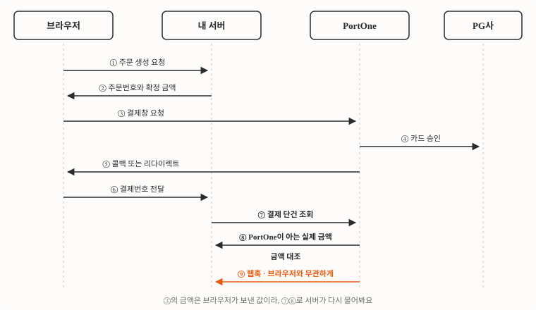
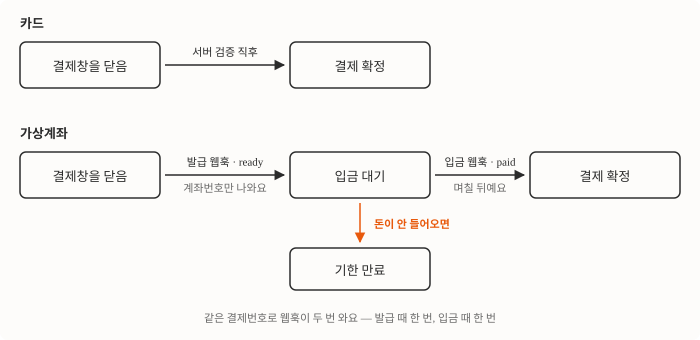

새 서비스에 결제를 붙일 일이 있어서 공식 문서와 실제 운영 중인 코드를 같이 놓고 정리했어요. 카드 결제창 하나 띄우는 게 전부일 것 같지만 실제로는 프론트·서버·웹훅 세 갈래를 다 만들어야 하고, 가상계좌까지 붙이면 구조가 한 번 더 바뀌어요.
이 글은 카드와 가상계좌까지 다뤄요
PortOne에는 V1과 V2가 있는데 이 글은 V1 기준이에요. 아예 새로 시작하는 프로젝트이고 쓰려는 결제 대행사(PG사)가 V2를 지원한다면 V2가 낫지만, 국내 PG사 커버리지와 레퍼런스 양은 아직 V1이 넓어요.
다루는 건 카드와 가상계좌 두 가지 결제수단, 그리고 그 둘이 공유하는 서버 검증·웹훅 구조예요. 정기결제(빌링키)와 본인인증은 다루지 않아요. 함정마다 이름을 붙여 뒀으니, 나중에 필요한 대목만 찾아 읽어도 돼요.
SDK는 스크립트 한 줄이면 되고 별도 의존성은 없어요.
<script src="https://cdn.iamport.kr/v1/iamport.js"></script>결제창을 지정할 때 쓰는 pg 파라미터(PG사코드.상점ID 형식)는 지원 중단 예정이에요. 신규 연동은 콘솔에서 발급받은 channelKey를 쓰면 돼요.
키는 네 가지예요
전부 관리자 콘솔의 결제 연동 → 연동 관리에서 확인해요. 처음에 저는 REST API Key와 Secret을 하나로 묶어 생각했는데, 값이 각각이라 환경변수도 둘로 나눠야 해요.
| 키 | 예시 | 어디까지 나가도 되나 |
|---|---|---|
| 고객사 식별코드 | imp00000000 | 프론트에 그대로 넣어도 돼요 |
| 채널키 | channelKey | 프론트에 그대로 넣어도 돼요 |
| REST API Key | imp_key | 서버에만 둬요 |
| REST API Secret | imp_secret | 서버에만 두고, 저장소에도 넣지 않아요 |
앞의 둘은 노출돼도 그것만으로는 아무것도 못 해요. 뒤의 둘은 결제 조회·취소를 할 수 있는 자격증명이라, 프론트 번들이나 저장소에 들어가면 남이 우리 결제를 취소할 수 있어요. Secret은 콘솔에서 재발급하면 기존 값이 즉시 무효화되니, 유출을 발견했다면 다른 조치보다 재발급이 먼저예요.
세 갈래를 다 만들어야 결제가 끝나요
브라우저가 결제창을 띄우고, 서버가 결과를 검증하고, 웹훅이 브라우저와 무관하게 최종 상태를 알려줘요. 이 셋 중 하나라도 빠지면 어딘가에서 돈과 주문이 어긋나요.

③에서 넘기는 금액은 브라우저에서 온 값이에요. 개발자 도구로 100원으로 바꿔 결제할 수도 있고요. 그래서 ⑦⑧로 받아온 금액을 우리 주문과 대조하는 일이 빠질 수 없어요. 이 글에서는 이걸 금액 대조라고 부를게요. 서버가 PortOne에 직접 물어본 금액과 우리 DB의 주문 금액이 같을 때만 주문을 확정해요.
⑨는 앞의 여덟 단계와 아무 관계 없이 도착해요. 사용자가 결제 직후 브라우저를 닫아도, 가상계좌에 며칠 뒤 입금해도, 관리자가 콘솔에서 취소해도 여기로 와요. 브라우저 쪽 흐름이 어디서 끊기든 결제 사실을 알 수 있는 경로는 이것 하나뿐이에요.
금액 대조는 서버가 직접 물어봐서 해요
토큰을 발급받고, 결제번호로 단건을 조회하고, 금액과 상태를 우리 DB와 대조해요.
// 1) 액세스 토큰
const tokenRes = await fetch("https://api.iamport.kr/users/getToken", {
method: "POST",
headers: { "Content-Type": "application/json" },
body: JSON.stringify({
imp_key: process.env.PORTONE_API_KEY,
imp_secret: process.env.PORTONE_API_SECRET,
}),
});
const { response: { access_token } } = await tokenRes.json();
// 2) 결제 단건 조회 — PortOne이 아는 진짜 값
const payRes = await fetch(`https://api.iamport.kr/payments/${imp_uid}`, {
headers: { Authorization: access_token },
});
const { response: payment } = await payRes.json();
// 3) 우리 주문과 대조
const order = await findOrder(payment.merchant_uid);
if (order.isPaid) return ok(); // 멱등 — 중복 호출 방어
if (payment.status !== "paid") throw Err("미승인");
if (payment.amount !== order.amount) {
await cancelPayment(imp_uid, "금액 불일치"); // 즉시 취소
throw Err("금액 위변조");
}
await markPaid(order.id, payment);imp_uid(PortOne 결제번호)와 pg_tid(PG사 거래번호)는 나중에 CS·정산·취소에서 꼭 필요해요. 결제 성공 시 주문 레코드에 함께 저장해 두면 좋아요.
init()을 두 번 부르면 채널이 도착하기 전에 결제창이 열려요
IMP.init("imp00000000");이게 재초기화 함정이에요. init()은 호출할 때마다 채널 목록을 비우고 비동기로 다시 받아와요. 결제와 본인인증을 함께 쓰는 앱에서 호출 직전에 init()을 또 부르면, 채널이 도착하기 전에 엉뚱한 채널을 집어 F1001 등록되지 않은 PG모듈 정보입니다로 실패해요. 앱 진입점에서 딱 한 번 부르고 끝내면 돼요.
리다이렉트 갈림길에서 모바일이 통째로 빠져요
PC와 모바일은 결과를 받는 방식이 아예 달라요.
| 환경 | 결과 수신 | 구현할 것 |
|---|---|---|
| PC 웹 | 두 번째 인자로 넘긴 콜백 함수가 불려요 | 콜백 안에서 서버 검증을 불러요 |
| 모바일 웹 | m_redirect_url로 페이지 이동. 쿼리스트링에 imp_uid, merchant_uid, error_code, error_msg | 리다이렉트를 받는 페이지를 따로 만들어요 |
| 앱 WebView | 외부 앱에서 돌아와야 해요 | app_scheme을 지정하고 네이티브 딥링크로 받아요 |
PC만 테스트하고 배포하면 모바일에서 결제 후 아무 화면도 뜨지 않아요. 리다이렉트 수신 페이지는 별도 라우트로 만들어 둬야 해요.
웹훅 본문은 트리거로만 쓰고 값은 조회로 꺼내요
웹훅으로 imp_uid·merchant_uid·status가 오지만, 실제 기록에 쓰는 값은 전부 조회 API 응답에서 꺼내요. 본문은 “어느 건이 바뀌었다”는 신호로만 취급해요. 그러면 앞 절의 금액 대조 코드 하나가 콜백 경로와 웹훅 경로 양쪽을 다 받아요.
어떤 일에 웹훅이 오는지는 이렇게 갈라져요.
| 이벤트 | status |
|---|---|
| 결제 승인 완료 | paid |
| 가상계좌 발급 | ready |
| 가상계좌 입금 완료 | paid |
| 콘솔에서 취소 | cancelled |
API 취소 (enable_webhook: true일 때만) | cancelled |
결제 실패는 웹훅이 오지 않아요. 실패는 클라이언트 콜백의 error_code/error_msg로만 알 수 있어요.
수신 규약도 몇 가지 있어요.
- 응답은 HTTP 2xx여야 해요. 그 외는 실패로 처리돼요
- 기본은 1회 발송이고, 네트워크 오류·5xx에 한해 1분 간격 최대 5회 재시도를 고객센터 요청으로 켤 수 있어요
- 같은 이벤트가 중복 도착할 수 있으니
imp_uid기준으로 멱등하게 짜야 해요 - PortOne이 localhost에 접근할 수 없어서 로컬 테스트는 ngrok 같은 터널링이 필요해요
웹훅이 클라이언트 콜백보다 먼저 도착할 수도, 늦게 도착할 수도 있어요. 두 경로가 같은 주문을 동시에 건드릴 수 있으니 주문 확정 로직은 한 곳에 모아야 안전해요.
멱등은 조건부 UPDATE 한 방으로 만들어요
“먼저 SELECT해서 확인하고 UPDATE”는 웹훅과 콜백이 동시에 들어오면 뚫려요. 상태 전이 자체를 조건부 UPDATE 하나로 만들고, 바뀐 행이 없으면 이미 끝난 일로 처리해요.
updated = repo.update_payment_status(payment_id, status)
if updated is None:
logger.info("Already received")
return ok() # 200 — 재발송을 조용히 흡수환불도 같은 문제를 겪는데 판단 기준이 달라요. 취소 웹훅도 중복으로 오거든요. 최근 결제결과가 cancelled이고 amount - cancel_amount == 0이면 이미 전액 환불된 건이에요. 부분취소가 섞이면 상태값만으로는 판단할 수 없어요.
가상계좌는 발급과 입금 사이에서 갈려요
같은 request_pay를 쓰지만 돈이 들어오는 시점이 달라요. 카드는 결제창을 닫는 순간 승인이 끝나고, 가상계좌는 계좌번호만 발급된 채 며칠 뒤에 입금돼요.

| 카드 | 가상계좌 | |
|---|---|---|
| 결제창을 닫은 직후 | 승인이 끝나 있어요 | 계좌번호만 발급돼요 |
| 그때의 status | paid예요 | ready예요 |
| 주문 확정 시점 | 서버 검증 직후예요 | 입금 웹훅을 받은 뒤예요 |
| 웹훅 없이 가능한가 | 가능하지만 권장하지 않아요 | 불가능해요 |
| 돈이 안 들어오는 경우 | 없어요 | 흔해요 |
| 환불 | 카드 취소로 끝나요 | 받을 계좌 정보를 고객에게 받아야 해요 |
가장 위험한 건 콜백의 success를 “결제됐다”로 읽는 거예요. 가상계좌에서 이건 “계좌가 발급됐다”는 뜻이거든요. 여기서 주문을 확정하면 입금 없이 상품이 나가요.
switch (payment.status) {
case "ready": // 계좌 발급됨
await saveVbankInfo(order, payment); // 안내 문자·메일 발송
break;
case "paid": // 실제 입금 완료
await confirmOrder(order, payment); // 여기서만 상품 지급
break;
case "cancelled":
await revokeOrder(order, payment);
break;
}같은 결제번호로 웹훅이 두 번 와요. 발급 때 한 번, 입금 때 한 번이거든요.
서버 쪽에서 미리 준비해 둘 건 네 가지예요.
- 주문 상태에
READY(입금대기)를 추가해요. 전이는READY → PAID/EXPIRED/CANCELLED - 웹훅
ready에서 계좌정보(vbank_num·vbank_name·vbank_holder·vbank_date)를 저장해요 - 웹훅
paid에서 금액을 검증하고 결제를 확정한 뒤 상품 지급과 현금영수증 발급까지 이어요 - 기존 카드 핸들러가 모르는 status를 만나 깨지지 않는지 확인해요
미입금 잔여가 쌓여요
가상계좌를 붙이면 결제창은 지났지만 돈은 안 들어온 주문이 생겨요. 카드만 쓸 때는 없던 일이라 설계에서 빠뜨리기 쉬워요.
- 기한이 만료된
ready주문은 배치로 주기적으로 스캔해 정리해요. 재고를 잡아두는 상품이면 특히 필요하고요 - 입금 전에 계좌를 말소할 땐
DELETE /vbanks/{imp_uid}를 써요 - 입금기한을 연장할 땐
PUT /vbanks/{imp_uid}인데, 지원 PG사가 제한적이에요
현금영수증도 우리가 챙겨야 해요
가상계좌는 현금 결제라 카드사가 알아서 해주던 일이 없어요. 소득공제(개인)는 휴대폰번호, 지출증빙(사업자)은 사업자등록번호 10자리를 받아요. 입력값은 결제창을 띄우기 전에 검증해서 통과 못 하면 발급 자체를 시작하지 않는 편이 나아요. 계좌가 발급된 뒤에 영수증 정보가 잘못된 걸 알게 되면 되돌리기가 번거롭거든요. 실제 발급은 입금이 확정된 다음 서버가 REST API로 처리해요.
가상계좌는 은행 연동이 얽혀 있어 PG사별 제약이 가장 큰 결제수단이에요. 예금주명 표기, 부분입금 허용 여부, 현금영수증 발행 시점, 입금기한 최대값이 전부 달라요. 계약한 PG사의 연동 유의사항 페이지를 따로 읽고 시작하는 게 좋아요.
취소는 조용한 200으로 실패해요
취소는 서버에서만 호출해요. 클라이언트에서 직접 호출하게 열어 두면 남의 결제도 취소할 수 있게 되거든요.
POST https://api.iamport.kr/payments/cancel
{
"imp_uid": "imp_123456789012",
"reason": "고객 변심",
"amount": 10000,
"checksum": 30000,
"enable_webhook": true
}주의할 점은 취소 API가 실패해도 HTTP 200을 반환한다는 거예요. 응답 body의 code가 0인지 확인하고, 아니면 message를 로깅해야 해요. 이걸 놓치면 “취소했는데 돈이 안 돌아왔다”는 문의가 쌓여요.
checksum에 현재 환불 가능 금액을 넣으면 동시 요청 때문에 생기는 이중 환불을 서버 쪽에서 막아줘요. 휴대폰 소액결제는 결제한 달이 지나면 전액환불조차 불가능해요.
운영해보고 알게 된 것들이에요
웹훅 안 후속 처리가 결제까지 물고 죽었어요. 결제 확정 다음에 다른 서비스로 권한을 만들어 주는 호출이 붙어 있었는데, 그 서비스가 인증 정책을 바꾸면서 서버끼리 부르는 호출이 403으로 막혔어요. 웹훅 핸들러가 예외로 종료되면서 돈은 받았는데 후속 처리는 안 된 상태가 됐고, 정책 변경 이후 완료된 결제 6건 전부가 그랬어요. 결제 확정과 후속 처리를 한 예외 경로에 묶어두면 이런 일이 생겨요.
도달 기반 계측은 브라우저가 안 돌아오면 유실돼요. 결제 완료 페이지에 도달하면 완료 이벤트를 보내는 방식이었는데, 카드 인증 앱을 거친 뒤 브라우저가 안 돌아오면 통째로 사라져요. 재보니 139건 중 39건이 안 찍히고 있었어요. 웹훅으로 결제를 확정하는 시점에 서버가 직접 보내도록 옮겼고, 중복 방지 키에 결제 식별자를 넣어 프론트 이벤트와 겹쳐도 한 건으로 합쳐지게 했어요. 옮긴 뒤의 유실률은 아직 다시 재지 않았어요.
가상계좌 저장 자리를 결제 결과 테이블로 옮겼어요. 가상계좌 정보를 결제 결과와 다른 테이블에 뒀다가 결제 결과 테이블 하나로 합쳤어요. 컬럼 두 개를 먼저 붙이고, 데이터를 합치고, 옛 테이블을 지우는 네 단계로 옮겼고요.
환경별 웹훅 주소는 요청마다 실어 보내요. 콘솔의 웹훅 URL은 한 채널에 하나뿐이라 dev·staging·prod를 나눌 수 없어요. request_pay에 notice_url을 환경변수로 주입하면 환경별로 자기 서버가 웹훅을 받아요.
결제수단은 두 값으로 풀어요. 카드와 가상계좌는 같은 PG 채널에서 pay_method만 달라요. 그런데 “선택된 결제수단 = 채널 문자열”로 상태를 들고 있으면 가상계좌를 추가하는 순간 분기가 꼬여요. 선택값을 { pg, pay_method } 두 값으로 푸는 순수함수 하나를 두면 분기가 한곳으로 모여요.
export const resolvePayTarget = (kind, creditChannel) => {
switch (kind) {
case "vbank": return { pg: creditChannel, payMethod: "vbank" };
case "naverpay": return { pg: NAVERPAY_CHANNEL, payMethod: "card" };
default: return { pg: creditChannel, payMethod: "card" };
}
};계좌 재조회 경로를 처음부터 계약에 넣었어야 했어요. 발급 직후 화면에 계좌번호를 띄우는 건 콜백 데이터만으로도 돼요. 문제는 사용자가 그 화면을 닫은 다음이에요. 입금은 며칠 뒤에 일어나는데 계좌번호를 다시 볼 방법이 없거든요. 계좌 정보 자체는 ready 웹훅을 받은 서버가 이미 들고 있으니, 주문 상세 응답에 vbank 블록 하나를 얹는 것으로 끝날 일이었어요. 이 항목이 1차 범위에서 빠져서 발급 직후 화면에서만 계좌를 확인할 수 있는 상태로 나간 적이 있어요.
출시 전에 확인할 것들을 모았어요
- REST API Secret이 프론트 번들에 없는지 확인해요. 빌드 산출물에서
imp_secret을 검색해 보면 돼요 - 금액을 서버가 정하고, 서버가 다시 검증하는지
- 모바일 리다이렉트 경로를 실기기에서 확인했는지
- 웹훅 엔드포인트가 인증 없이 열려 있고 2xx를 반환하는지. 단, 본문을 믿지 말고
imp_uid로 조회해 검증할 것 - 웹훅 핸들러가 부르는 다른 서비스 호출이 실패해도 결제 확정 자체는 남는지
- 주문 확정 로직이 멱등한지
imp_uid와pg_tid를 저장하는지- 가상계좌를 쓴다면
ready와paid를 갈라 처리하는지 - 테스트 채널키와 실연동 채널키가 환경변수로 분리돼 있는지
- 실연동 채널로 소액 실결제 후 취소까지 해봤는지